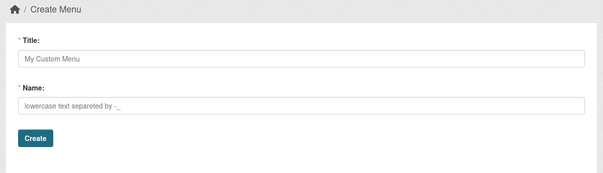
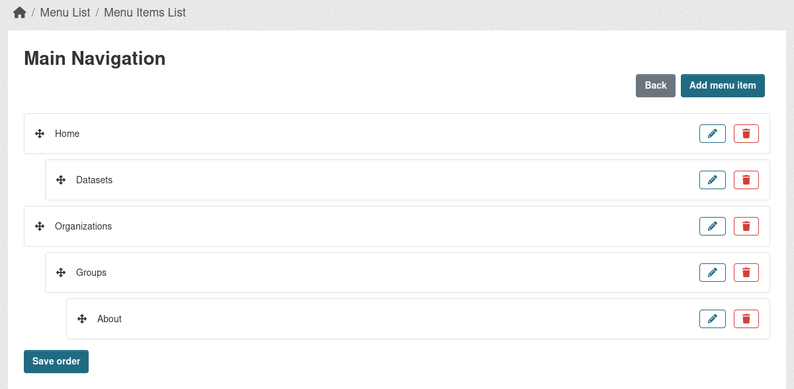

Usage
Create a custom Menu
Go to /menu/list on your portal and click Create.
Fill the two required fields:
-
Title - User friendly naming of future menu.
-
Name - should be a lowercase text separated by
-_symbols. This field is used as an alternative to ID, but while the ID on each instance can be different, as the menus can be created an different order,Name will stay same across all environments.

Add Menu items to created Menu
While being on the Menus list page, click on the list icon at Actions section, this will open an page, from where you can:
- Add new Menu items.
- View the Menu items you already created.
- Edit/Delete the Menu items.
- Re-order the Menu items.
Menu item has following fields:
- Title - Specify future Menu item name
- URL - Specify the URL it should lead to. It can be either internal or external URL. The internal URL should always start from
/. - Position - specify the place it should take in the Menu list. For example if you want it to be second, you can set it to
2, while the first menu item will have this value set to1. Alterantilly you be able to modify the order from the Menu list page using UI. - Parent - Can specify the parent Menu item it should be set under. Can be set on the list page.
- Classes - Additional classes that the
atag should have, separated by space. - Attributes - Additional attributes that the
atag should have. For example if the URL is an external link and it should be opened in separate window. This attributes should be provided as an Python dictionary, where thekeyis the name if the attribute and thevalueis its value (e.g. {"target": "_blank"}).

Adding Menu into template
Currently there is an helper that can be called in Jinja2 template.
Example:
This will return and rendered menu tree strucure like this:
<ul>
<li>
<a href="/some-url" class="MENU_ITEM_CLASSES" MENU_ITEM_ATTRIBUTES>Some link<a>
</li>
<li class="active">
<a href="/some-url" class="active">Active Menu link<a>
</li>
<li>
<a href="/some-url" >Menu link with children<a>
<ul>
<li>
<a href="/some-url">Second level menu item<a>
</li>
</ul>
</li>
</ul>
In build_menu_tree you also can specify an path to an custom snippet if you need to customize the output of the menu by providing second argument, which is an string path to the custom snippet. Example: {{ h.build_menu_tree('MENU_NAME', 'menu/snippets/footer_menu.html') }}. Where menu/snippets/footer_menu.html is an Real path in the templates folder.
Macros
While adding custom snippet to render menu, you can use existing Macros or create new for your custom Menus.
You can find example of Macros at templates/menu/macros/menu.html file in the extension, where it build the trees.
For example default_menu_tree build the tree without any additional code, just pure list structure, while footer_menu_tree adds additional class to the top ul element or main_nav_dropdown_menu_tree, which turns the menu structure into Boostrap 5 dropdown version.
You can create your own Macros or use the similar code straight into your custom snippets.